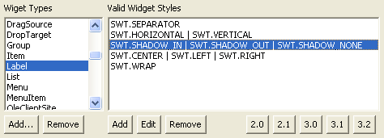

Audit - Rules - UI Specific (SWT)DescriptionThis group contains audit rules that look for possible errors or problems related to the use of user interface elements (Swing, AWT, SWT, JFace). |
| Rules: |
Summary
The method Dialog.applyDialogFont(Composite) should be invoked in the createContents method so that user preferences will be honored.
Description
This audit rule finds implementations of the method createContents(Composite) in subclasses of org.eclipse.jface.dialogs.Dialog in which the method Dialog.applyDialogFont(Composite) is not invoked. This method should always be invoked so that user preference settings will be honored.
Example
The following method:
protected Control createContents(Composite parent)
{
Composite contents;
contents = (Composite) super.createContents(parent);
...
return contents;
}
Should have the following line added just before the return statement:
Dialog.applyDialogFont(parent);
Summary
You should invoke the dispose() method for objects which are types or subtypes of classes that are situated in org.eclipse.swt.graphics package.
Description
This rule looks for places where such objects are created and then checks that dispose() was invoked.
Security Implications
An SWT resource that is not properly closed is a reasource leak. When created, an SWT object takes system resources that will not be freed if dispose() is not called. Sooner or later this will cause denial in creation of new SWT objects resulting in a runtime exception. This could be used to create a potential denial-of-service state or reveal security-sensitive parts of an application's design through the stack trace.
Example
The following creation of an object would be marked as a violation because the dispose() method is not invoked:
public class Sample {
public void sampleMeth( Display display ) {
ImageData imageData = new ImageData("filename");
Image image = new Image(display, imageData);
}
}
Summary
The method Component.setSize() should not be invoked within ComponentListener.componentResized().
Description
This audit rule looks for invocations of the method Component.setSize() within methods that override the method ComponentListener.componentResized(). The method setSize() causes the method componentResized() to be invoked, thus leading to a stack overflow.
Example
The given invocation of the method setSize() in the following method would be flagged as a violation:
class MyComponentListener extends Component implements ComponentListener {
public void componentResized(ComponentEvent event) {
setSize(100, 100);
}
...
}
Summary
SWT style bits should be combined using the bitwise-OR operator.
Description
This audit rule looks for creations of SWT widgets where the style bits are being combined using an operator other than the bitwise-OR.
Example Text text = new Text(shell, SWT.SINGLE & SWT.BORDER);
Summary
Widget types should only be assigned valid SWT styles.
Description
This audit rule looks for declarations of widget types with incorrect styles set. Incorrectly set styles create a user interface not intended by the developer, are unnecessary, and can lead to program errors or exceptions. Styles input into a constructor are assumed to directly reference the integer values, that is, local integer fields or integer constants are assumed not to be passed instead.
Under the audit rule parameters ("Parameters" tab) the sets of valid styles for each widget can be changed. After selecting a widget from the left-hand list, say Label, the list on the right is the set of "incompatible style groups". For the Label widget, you will see both "SWT.SEPARATOR" and "SWT.SHADOW_IN | SWT.SHADOW_OUT | SWT.SHADOW_NONE" in this list. This means that these four styles are all valid styles for the Label widget.
Furthermore, since SWT.SHADOW_IN, SWT.SHADOW_OUT and SWT.SHADOW_NONE are in a group, only one of these styles may be attributed to a Label. If two of these three are given to a Label, the constructor will be flagged.
The buttons 2.0/.../3.2 restore all widgets and styles included in the SWT package for the specified version. All non-SWT widgets entered by the user, aren't affected by these buttons.
Example
The following would be flagged twice as Button widgets can't have the SWT.SINGLE style and can also not contain both the SWT.CHECK and SWT.PUSH styles at the same time.
Button button = new Button(shell, SWT.SINGLE | SWT.CHECK | SWT.PUSH);
